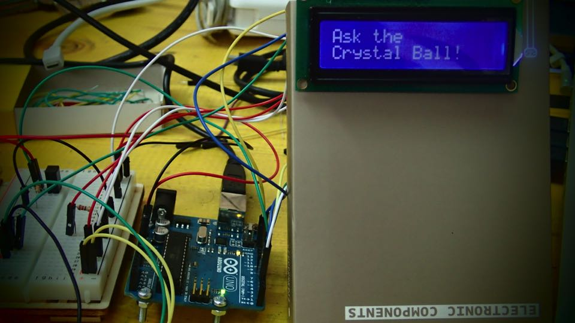
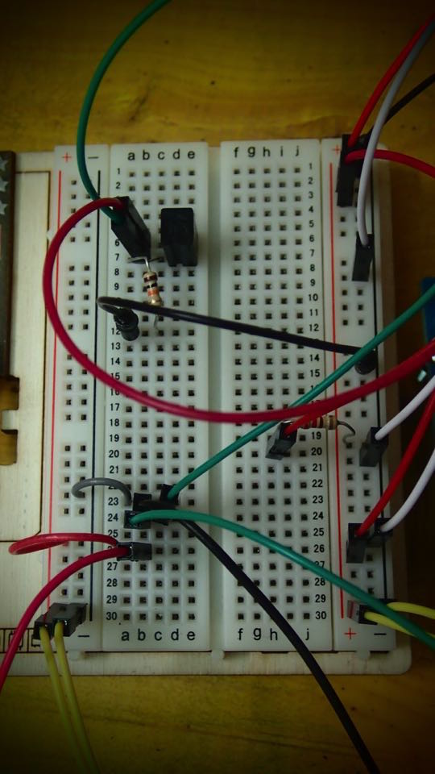
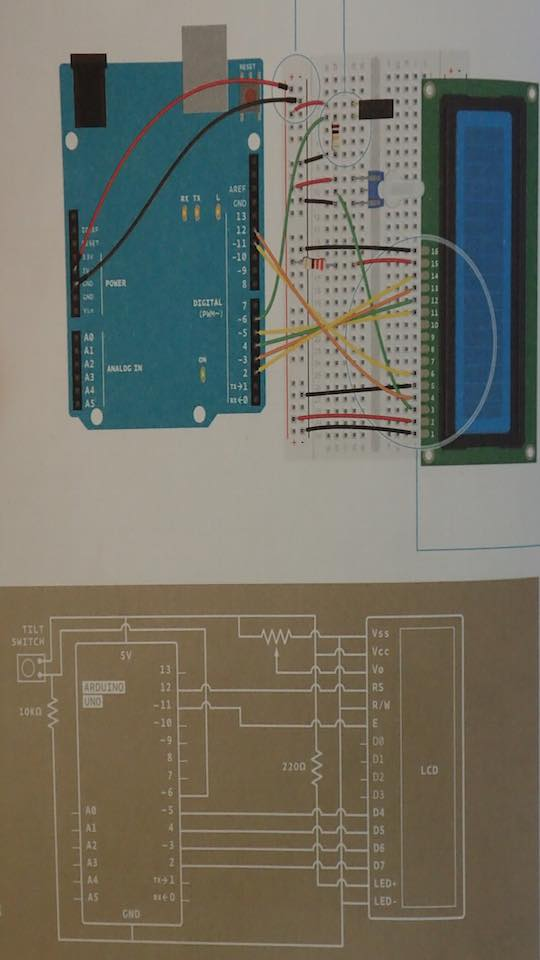
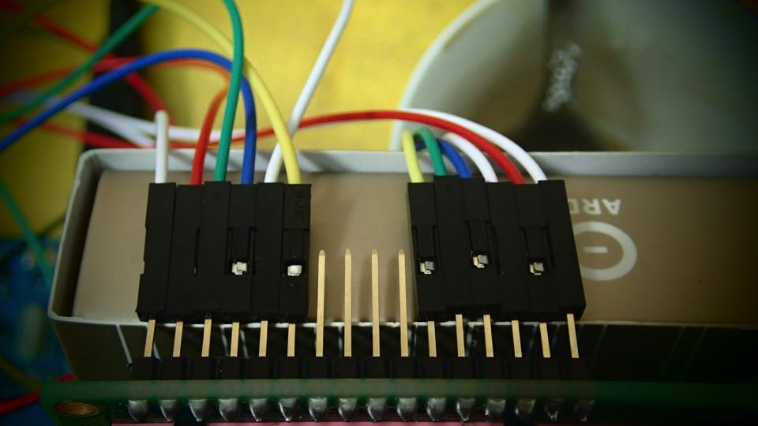
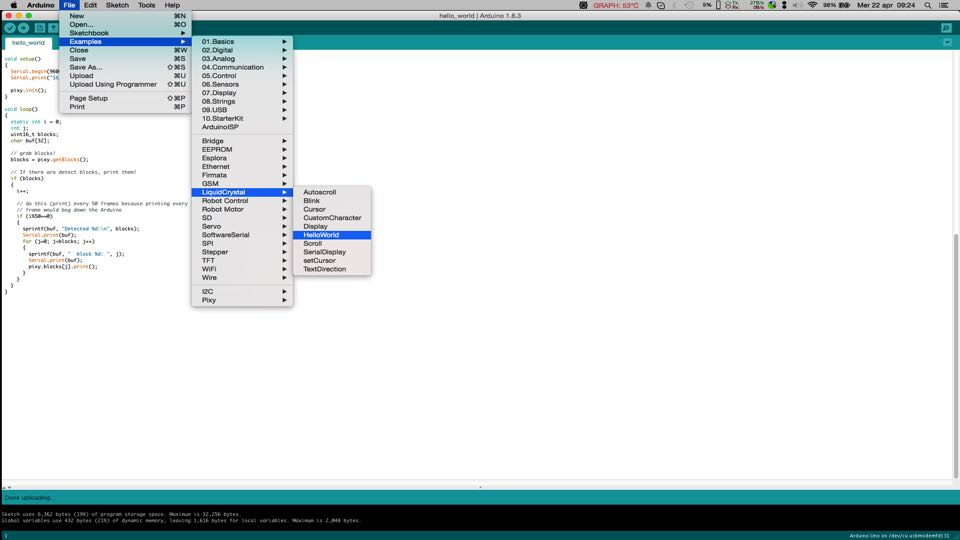

1ST PART --> CREATE A CRYSTALL BALL TO TELL YOUR FUTURE
List of elements for this part of exercise: Potentiometer # 220 ohm Resistor # 10 Kilohm Resistor # Switch # Tilt Sensor # Lcd Screen
I have followed the simple procedure of realization in the Arduino Project Book.





/*
Arduino Starter Kit example
Project 11 - Crystal Ball
This sketch is written to accompany Project 11 in the
Arduino Starter Kit
Parts required:
220 ohm resistor
10 kilohm resistor
10 kilohm potentiometer
16x2 LCD screen
tilt switch
Created 13 September 2012
by Scott Fitzgerald
http://arduino.cc/starterKit
This example code is part of the public domain
*/
// include the library code:
#include
// initialize the library with the numbers of the interface pins
LiquidCrystal lcd(12, 11, 5, 4, 3, 2);
// set up a constant for the tilt switchPin
const int switchPin = 6;
// variable to hold the value of the switchPin
int switchState = 0;
// variable to hold previous value of the switchpin
int prevSwitchState = 0;
// a variable to choose which reply from the crystal ball
int reply;
void setup() {
// set up the number of columns and rows on the LCD
lcd.begin(16, 2);
// set up the switch pin as an input
pinMode(switchPin, INPUT);
// Print a message to the LCD.
lcd.print("Ask the");
// set the cursor to column 0, line 1
// line 1 is the second row, since counting begins with 0
lcd.setCursor(0, 1);
// print to the second line
lcd.print("Crystal Ball!");
}
void loop() {
// check the status of the switch
switchState = digitalRead(switchPin);
// compare the switchState to its previous state
if (switchState != prevSwitchState) {
// if the state has changed from HIGH to LOW
// you know that the ball has been tilted from
// one direction to the other
if (switchState == LOW) {
// randomly chose a reply
reply = random(8);
// clean up the screen before printing a new reply
lcd.clear();
// set the cursor to column 0, line 0
lcd.setCursor(0, 0);
// print some text
lcd.print("the ball says:");
// move the cursor to the second line
lcd.setCursor(0, 1);
// choose a saying to print baed on the value in reply
switch (reply) {
case 0:
lcd.print("Yes");
break;
case 1:
lcd.print("Most likely");
break;
case 2:
lcd.print("Certainly");
break;
case 3:
lcd.print("Outlook good");
break;
case 4:
lcd.print("Unsure");
break;
case 5:
lcd.print("Ask again");
break;
case 6:
lcd.print("Doubtful");
break;
case 7:
lcd.print("No");
break;
}
}
}
// save the current switch state as the last state
prevSwitchState = switchState;
}
2ST PART --> ARDUINO "Hello World" TUTORIAL: ASSIGN NEW DIGITAL PIN ADDRSS BETWEENTHE BOARD AND LCD
After having followed this tutorial I have modified the native code of the exercise, assigning the corresponding pins.
LCD pin name --> RS EN DB4 DB5 DB6 DB7
Arduino pin --> 7 8 9 10 11 12
Open up the File→Examples→LiquidCrystal→HelloWorld example sketch
LiquidCrystal lcd(12, 11, 5, 4, 3, 2);
And change it to:
LiquidCrystal lcd(7, 8, 9, 10, 11, 12);
The modify sketch is :
*/
// include the library code:
#include
// initialize the library with the numbers of the interface pins
LiquidCrystal lcd(7, 8, 9, 10, 11, 12);
void setup() {
// set up the LCD's number of columns and rows:
lcd.begin(16, 2);
// Print a message to the LCD.
lcd.print("hello, world!");
}
void loop() {
// set the cursor to column 0, line 1
// (note: line 1 is the second row, since counting begins with 0):
lcd.setCursor(0, 1);
// print the number of seconds since reset:
lcd.print(millis()/1000);
}
3D PART-->IMPORT LIDAR LITE LIBRARIES AND CONNECT TO ARDUINO
After having downloaded and imported the Library I2C it is possible to connect the sensor Lidar to the board.
Differents sketchs are available in the Git Hub Repository of the Lidar Retailer. That one that i used is the following LIDARLite_Basics
/*
http://pulsedlight3d.com
This sketch demonstrates getting distance with the LIDAR-Lite Sensor
It utilizes the 'Arduino I2C Master Library' from DSS Circuits:
http://www.dsscircuits.com/index.php/articles/66-arduino-i2c-master-library
You can find more information about installing libraries here:
http://arduino.cc/en/Guide/Libraries
*/
#include
#define LIDARLite_ADDRESS 0x62 // Default I2C Address of LIDAR-Lite.
#define RegisterMeasure 0x00 // Register to write to initiate ranging.
#define MeasureValue 0x04 // Value to initiate ranging.
#define RegisterHighLowB 0x8f // Register to get both High and Low bytes in 1 call.
void setup(){
Serial.begin(9600); //Opens serial connection at 9600bps.
I2c.begin(); // Opens & joins the irc bus as master
delay(100); // Waits to make sure everything is powered up before sending or receiving data
I2c.timeOut(50); // Sets a timeout to ensure no locking up of sketch if I2C communication fails
}
void loop(){
// Write 0x04 to register 0x00
uint8_t nackack = 100; // Setup variable to hold ACK/NACK resopnses
while (nackack != 0){ // While NACK keep going (i.e. continue polling until sucess message (ACK) is received )
nackack = I2c.write(LIDARLite_ADDRESS,RegisterMeasure, MeasureValue); // Write 0x04 to 0x00
delay(1); // Wait 1 ms to prevent overpolling
}
byte distanceArray[2]; // array to store distance bytes from read function
// Read 2byte distance from register 0x8f
nackack = 100; // Setup variable to hold ACK/NACK resopnses
while (nackack != 0){ // While NACK keep going (i.e. continue polling until sucess message (ACK) is received )
nackack = I2c.read(LIDARLite_ADDRESS,RegisterHighLowB, 2, distanceArray); // Read 2 Bytes from LIDAR-Lite Address and store in array
delay(1); // Wait 1 ms to prevent overpolling
}
int distance = (distanceArray[0] << 8) + distanceArray[1]; // Shift high byte [0] 8 to the left and add low byte [1] to create 16-bit int
// Print Distance
Serial.println(distance);
delay(500);
}
Now it'is the moment to marge 2 sketchs: I have respected the respective fields "void setup ()" and "void loop ()" for creating one only sketch.
I have modified :
Removed
lcd.print ("hello, world!")
Removed
Serial.begin(9600);
Add "lcd.clear" line for the refresh of LCD data.
lcd.clear();
Add "lcd.print" For print the 1st text
lcd.print("DISTANCE Cm:");
Add "lcd.print" For print the 2st text Lidar Information
lcd.print(distance);
Add "delay" line to reduce the time of dispatch of the data and to allow LCD to visualize proprely the data.
delay(300);
The result is the following sketch : -)
/*
LiquidCrystal + LIDAR Lite Sensor By Pierluigi De Palo // Fab Academy "=!%
Demonstrates the use a 16x2 LCD display. The LiquidCrystal
library works with all LCD displays that are compatible with the
Hitachi HD44780 driver. There are many of them out there, and you
can usually tell them by the 16-pin interface.
The circuit:
For the LCD
* LCD RS pin to digital pin 7
* LCD Enable pin to digital pin 8
* LCD D4 pin to digital pin 9
* LCD D5 pin to digital pin 10
* LCD D6 pin to digital pin 11
* LCD D7 pin to digital pin 12
* LCD R/W pin to ground
* LCD VSS pin to ground
* LCD VCC pin to 5V
* ends to +5V and ground
* wiper to LCD VO pin (pin 3)
Library originally added 18 Apr 2008 by David A. Mellis
Modified 5 Jul 2009 by Limor Fried (http://www.ladyada.net)
Example added 9 Jul 2009 by Tom Igoe modified 22 Nov 2010 by Tom Igoe
This example code is in the public domain. http://www.arduino.cc/en/Tutorial/LiquidCrystal
For the Lidar Lite Distance Sensor:
* Lidar Lite GND
* Lidar Lite SDA
* Lidar Lite SCL
* Lidar Lite MODE no pin
* Lidar Lite PWR EN no pin
* Lidar 5V
*/
// include the library code:
#include
#include
#define LIDARLite_ADDRESS 0x62 // Default I2C Address of LIDAR-Lite.
#define RegisterMeasure 0x00 // Register to write to initiate ranging.
#define MeasureValue 0x04 // Value to initiate ranging.
#define RegisterHighLowB 0x8f // Register to get both High and Low bytes in 1 call.
LiquidCrystal lcd(7, 8, 9, 10, 11, 12); // initialize the library with the numbers of the interface pins
void setup() {
lcd.begin(16, 2); // set up the LCD's number of columns and rows:
I2c.begin(); // Opens & joins the irc bus as master
delay(500); // Waits to make sure everything is powered up before sending or receiving data
I2c.timeOut(50); // Sets a timeout to ensure no locking up of sketch if I2C communication fails
}
void loop() {
// Write 0x04 to register 0x00
uint8_t nackack = 100; // Setup variable to hold ACK/NACK resopnses
while (nackack != 0){ // While NACK keep going (i.e. continue polling until sucess message (ACK) is received )
nackack = I2c.write(LIDARLite_ADDRESS,RegisterMeasure, MeasureValue); // Write 0x04 to 0x00
delay(1); // Wait 1 ms to prevent overpolling
}
byte distanceArray[2]; // array to store distance bytes from read function
// Read 2byte distance from register 0x8f
nackack = 100; // Setup variable to hold ACK/NACK resopnses
while (nackack != 0){ // While NACK keep going (i.e. continue polling until sucess message (ACK) is received )
nackack = I2c.read(LIDARLite_ADDRESS,RegisterHighLowB, 2, distanceArray); // Read 2 Bytes from LIDAR-Lite Address and store in array
delay(1); // Wait 1 ms to prevent overpolling
}
int distance = (distanceArray[0] << 8) + distanceArray[1]; // Shift high byte [0] 8 to the left and add low byte [1] to create 16-bit int
lcd.setCursor(6, 1); // set the cursor to column and line // (note: line 1 is the second row, since counting begins with 0):
lcd.clear();
lcd.print("DISTANCE Cm:");
lcd.print(distance); // Print Distance
delay(300);
}